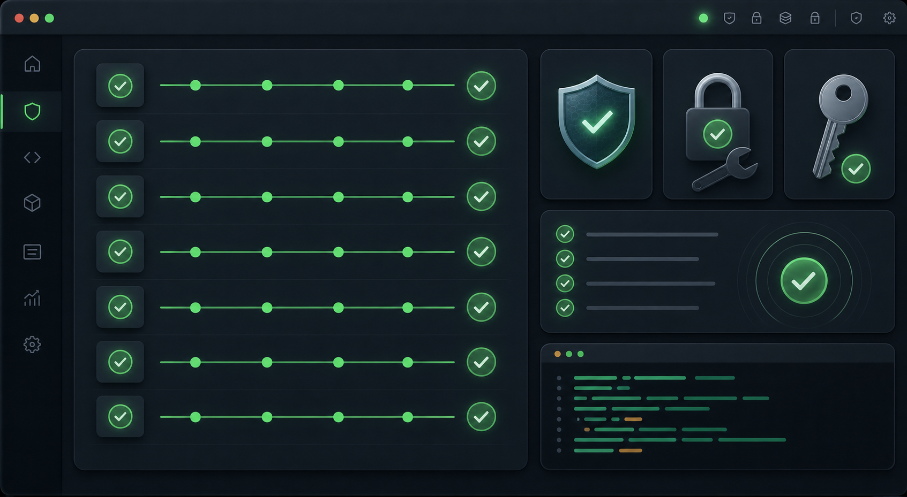
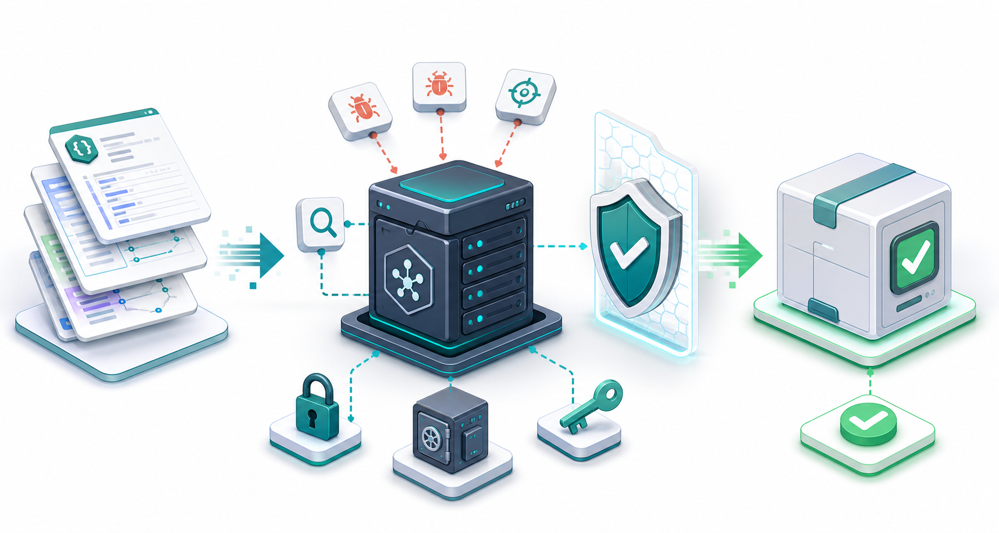

Token Rejection
Missing, malformed, expired, wrong-issuer, and wrong-audience tokens were rejected.
OpenAPI MCP Generator security validation
This report explains the local red-team process, the verified results, and the value it added to the project. The factual claims are based on the repository runbook, the automated harness, and a fresh baseline run completed on 2026-07-09. This is a historical snapshot, not the current project status.
Purpose
The runbook turns the generated-server threat model into a repeatable local exercise. It focuses on generated MCP servers that expose OpenAPI operations as tools, validate caller bearer tokens, enforce transport guards, apply tool-level authorization metadata, and keep upstream API credentials separate from caller tokens by default.
The automated baseline does not require real Stripe or PayPal credentials. It uses a temporary generated server, a local JWKS issuer, and a local mock upstream API.
Process
| Command | Verified Result | Why It Matters |
|---|---|---|
npm run build |
PASS | Confirms the TypeScript project compiles before runtime security checks run. |
npm test |
PASS 23 suites, 258 tests | Confirms parser, generator, provider, template, utility, and integration coverage remains green. |
npm run test:e2e |
PASS e2e: ALL GREEN |
Confirms a generated runtime accepts valid MCP traffic and rejects key invalid auth and transport cases. |
npm run test:red-team |
PASS red-team: ALL GREEN |
Confirms the focused local attack harness passed across auth, transport, tool authorization, and upstream credential probes. |

Results
Missing, malformed, expired, wrong-issuer, and wrong-audience tokens were rejected.
Missing baseline scope returned 403, and under-scoped tool calls returned insufficient scope.
External Host, disallowed browser Origin, oversized JSON, GET, and DELETE probes were rejected.
The group-restricted tool was hidden without the required group and visible with the required group.
A direct hidden-tool call did not reach the local upstream mock.
The upstream mock received UPSTREAM_API_KEY, not the caller bearer token.
Project Value
The process converted the security model into an executable regression harness. That gives the project a repeatable way to validate the generated server boundary before release, without depending on live payment-provider credentials or external services.

Boundaries
The automated baseline produced no confirmed findings, but it is not
a complete proof of security. The manual checklist remains useful for
deeper coverage of custom --groups-claim behavior,
--authz-hook generation and failures, malformed or
unavailable JWKS endpoints, non-JSON upstream responses, upstream
timeouts, duplicate generated names, and additional malicious OpenAPI
shapes.
Current conclusion: the verified automated baseline passed and found no issues. Manual probes should still be run when release risk, generated-server changes, or new provider behavior warrants deeper review.
Source Of Truth
| File | Purpose |
|---|---|
| RED-TEAM-WEEKEND.md | Runbook, baseline commands, attack checklist, and triage guide. |
| red-team-findings.md | Latest verified result record and passed probe list. |
src/test/e2e/red-team-weekend.mjs |
Automated local red-team harness used by npm run test:red-team. |
src/test/e2e/runtime-smoke.mjs |
Generated-server runtime smoke test used by npm run test:e2e. |